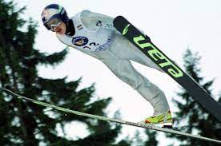
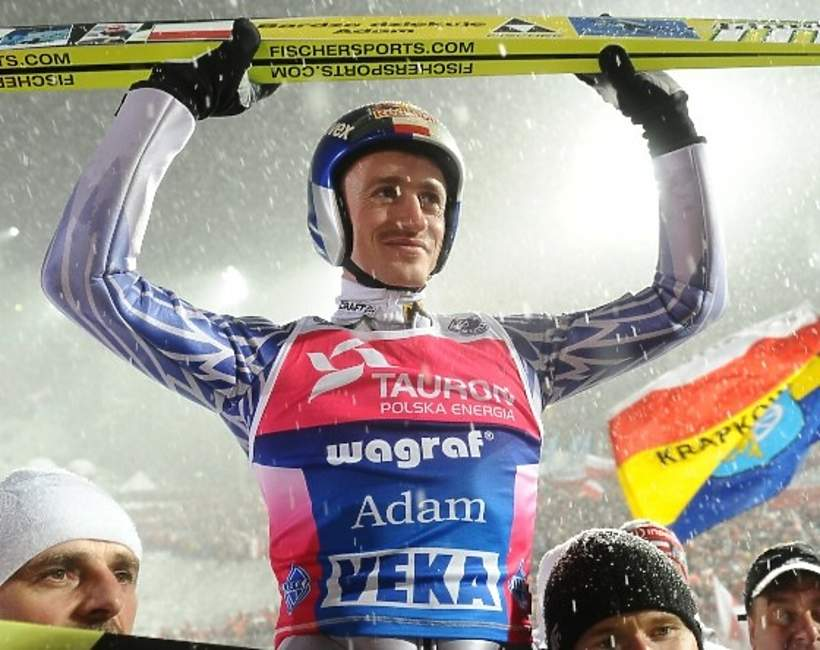

Adam Małysz to jeden z najbardziej znanych i utytułowanych polskich sportowców. Mistrz świata, olimpijczyk, czterokrotny zdobywca Pucharu Świata w skokach narciarskich. Po zakończeniu kariery skoczka kierowca rajdowy. Obecnie dyrektor koordynator ds. skoków narciarskich i kombinacji norweskiej w Polskim Związku Narciarskim.
W wieku 6 lat pierwsze skoki Adam Małysz oddał w Wiśle, na skoczni K17. Był tam też motyw dość homorystyczny, ponieważ pewnego razu dostał za duże buty – efekt był taki, że przy wyjściu z progu z butów tych wyskoczył, i został w samych skarpetkach.
Następnie miały miejsce zawody na mamuciej skoczni w Harrachovie. Małysz zwyciężył. Pobił wówczas wszelkie rekordy, w tym rekord Polski w najdłuższym oddanym skoku narciarskim. Później miał miejsce Puchar Świata w Park City. Małysz zwyciężył. Wyjeżdżając na zawody Pucharu Świata do Japonii Adam Małysz był liderem klasyfikacji PŚ poza zasięgiem konkurencji. W Ville Kantee wynik, który Małysz uzyskał, został w dziedzinie skoków na tak dużych skoczniach nieoficjalnym rekordem świata. Następnego dnia osiągając 36,5 punktów przewagi nad drugim skoczkiem w zawodach, po raz kolejny w sezonie triumfował, rzecz jasna na tej samej skoczni.
Adam Małysz zakończył karierę skoczka narciarskiego wraz z ukończeniem sezonu 2010/2011. Przebranżowił się bardzo szybko, bowiem rozpoczął starty w rajdach samochodowych. W roku 2012 był już międzynarodowym mistrzem Polski i Czech w rajdach samochodowych, a w roku 2013 zajął pierwsze miejsce w karierze – zwycięstwo w rajdach terenowych. W latach od 2012 do 2016 aż pięciokrotnie uczestniczył w rajdzie Dakar.
W roku 2016 Adam Małysz otrzymał stanowisko w Polskim Związku Narciarskim jako dyrektor-koordynator do spraw skoków narciarskich i kombinacji norweskiej.
Cytaty:
"Zrzucając zbędne kilogramy, wcale nie trzeba korzystać z cudownych diet. Wystarczy bułka z bananem!".
"Dla mnie najważniejsza jest atmosfera, przyjazna atmosfera, aby była pociecha. Przede wszystkim pogoda, żeby sypał śnieg...".
"Ja zawsze kibicuję słabszym."
"Mój plan jest prosty – stanąć na podium. Ale nie powiem, na którym stopniu.”


QUIZ
Odpowiedź
Pytanie 1: Co Adam Małysz jadł przed zawodami?
Odpowiedź
Pytanie 2: Ile razy Adam Małysz wygrał zawody Pucharu Świata?
Odpowiedź
Pytanie 3: Co Adam robił po zakończeniu kariery skoczka narciarskiego?